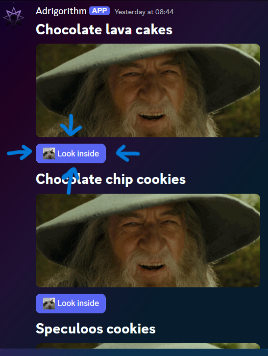
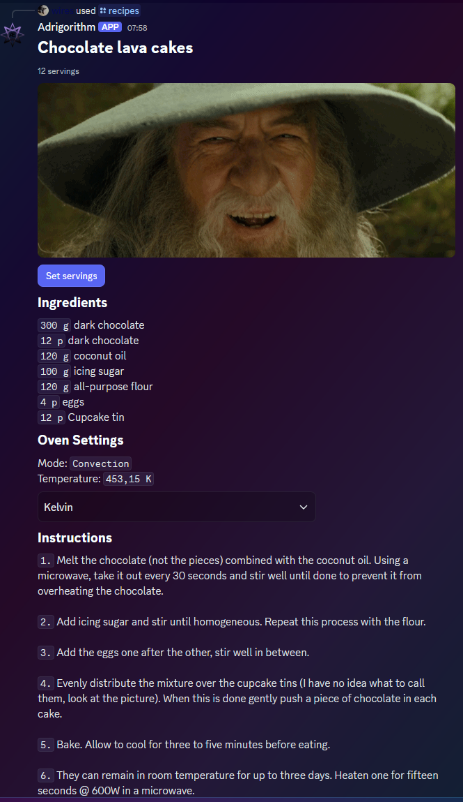

Interaction with components
Lifecycle
A component should receive an initial response within a 3 second timeframe. After this it can continue receiving responses for up to 15 minutes, this is useful when a component needs to be rebuilt periodically (buttons etc), which is also what we will be leveraging here.
Catching of and responding to a user interaction
Before we respond to an interaction triggered by the user we must first "catch" it. You can do this by hooking into the DiscordSocketClient#InteractionCreated event. Before proceeding we should make sure that the event was triggered by our component.
The way you get you get/retrieve a specific component from a message is by either their customId (this is what is used here) or by using IEnumerable<IMessageComponent>#FindComponentById. The latter finds a component by the integer id, and optionally by the type provided as the generic type parameter. Each component is automatically assigned with an incremental id (unique within a given message), unless overriden by the developer. You can see how that works in Advanced.
Consider this component (the same as used in Intro). The buttons have a customId of "recipes-show-me-button-{recipe.RecipeId}", where the last part is an unique identifier.

private async Task ClientOnInteractionCreatedAsync(SocketInteraction arg)
{
switch (arg)
{
case SocketMessageComponent component:
switch (component.Data.CustomId)
{
// Non dynamic cases ...
default:
var customId = component.Data.CustomId;
var lastPartStartIndex = customId.LastIndexOf('-');
if (lastPartStartIndex == -1)
return;
if (customId[..lastPartStartIndex] == RecipesLookInsideButton) // "recipes-show-me-button"
await component.UpdateAsync(m => m.Components = BuildComponentUnsafe(_recipes.First(r => r.RecipeId == int.Parse(customId[(lastPartStartIndex + 1)..]))).Build()); // _recipes is a list of Recipe objects ; int.Parse({recipe.RecipeId}) (in this case it is 1)
break;
}
break;
case SocketModal modal:
// Interaction came from a modal
break;
default:
return;
}
}
UpdateAsync replaces our component array with a new one built based on the button clicked (recipe with the specified ID). More on this more advanced component v2 in Advanced.
